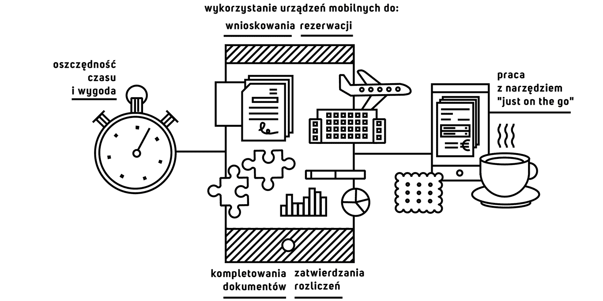

Czy organizowanie i rozliczanie wyjazdów muszą się odbywać w biurze? Potrafimy udowodnić, że nie. Posiadając dowolne urządzenie przenośne z dostępem do internetu można te czynności wykonać w tzw. wolnej chwili - „just on the go”. A dzięki lepszemu gospodarowaniu czasem wzrasta produktywność całej organizacji.
Rozwiązanie Vaterval pozwala na wykorzystanie urządzeń mobilnych do:
